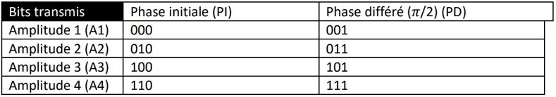
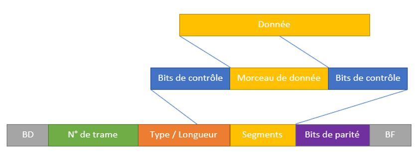

Nous devons faire communiquer deux ordinateurs avec du son sans que personne ne l'entende. Le premier ordinateur envoie des ultrasons qui traverse un mur pour ensuite être capté par un micro. Ce micro est relié par un réseau filaire à l'ordinateur receveur du message.
Le projet dans son ensemble m'a permis d'apprendre :
- Les modulations d'onde (ici sonore), fréquence, amplitude et phase.
- Les filtres sonores.
- Les bases des protocoles réseaux.
- Les bases du langage python.
Modulations
La modulation du son nous permet de transmettre des bits de données. Nous avons 4 modulations d'amplitude sur 2 bits et 2 modulations de phases sur 1 bit. Ainsi chaque période d'un signal envoie 3 bits de données. Nous envoyons 3 signaux en même temps qui sont portés par une onde ultrasonore. Nous avions donc un débit théorique d'envoi de 72 kbits/s.
l'image ci-dessous récapitule l'encodage d'un signal sonore.
Tableau de correspondance bits/modulations
Protocoles réseaux
Le protocole réseau nous permet bien identifier chaque portion de signal à décoder et permet aussi de détecter des erreurs de transmissions potentielles. Pour identifier chaque trame nous avons un bit de start, un bit de stop, un identificateur avec le numéro de trame, un bit de parité et finalement le segment. Le segment qui contient la donnée avec le code correcteur de Hamming par-dessus pour détecter les erreurs.
l'image ci-dessous récapitule la composition d'une trame.
Modélisation de l'encapsulement d'une donnée
Programme en Python
Le programme en python nous permet de simuler l'envoie et la réception des données. c'est pourquoi nous avons un programme pour l'envoi et un autre pour la réception.
Le programme d'envoi va lire le message depuis un fichier texte et faire la conversion des caractères en binaires. il va ensuite découper la suite de bits pour obtenir des segments en y rajoutant les bits de contrôles de Hamming. Le programme va composer les trames comme vu plus haut. Enfin le programme va composer le signal sonore modulé et lire le son produit.
Voici le programme d'envoie complet.
Dans un souci nous n'avons pas pu travailler sur la réception du son par un ordinateur, Nous avons donc simulé en écrivant les trames dans un fichier texte.
Le programme de réception va lire le fichier texte avec les trames envoyées, et reconvertir les bits en caractères. Le programme passe évidemment par la décomposition des trames ainsi que de tous les bits de contrôles.
Voici le programme de réception complet.